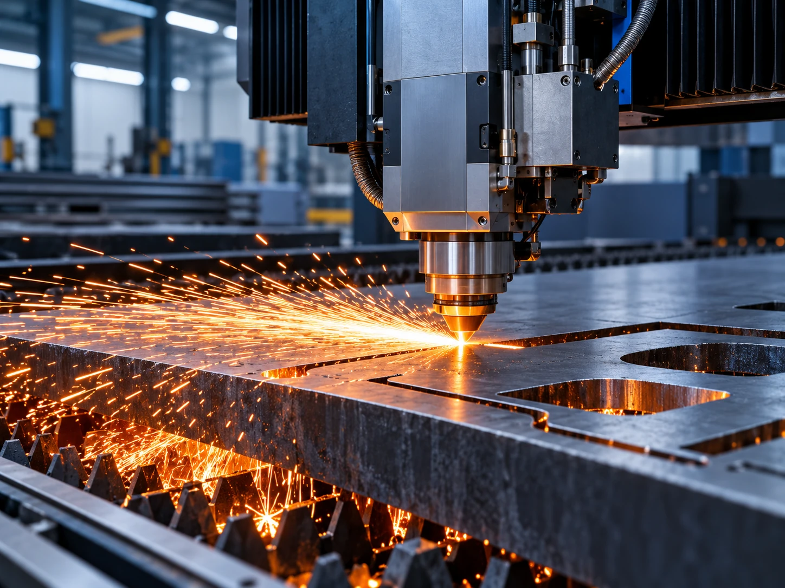

Photon Precision
6KW FIBRE LASER CUTTING
High-energy fibre laser technology turns digital geometry into precision-cut steel components at production speed. Ideal for complex profiles, prototypes, repeat batches and fabrication-ready parts.
6kW Fibre Laser3m BedDigital Profiling
Quote a laser project →